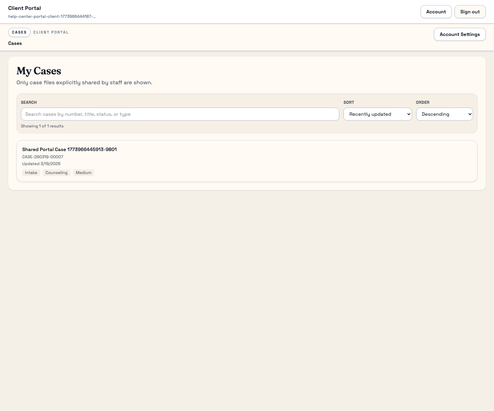
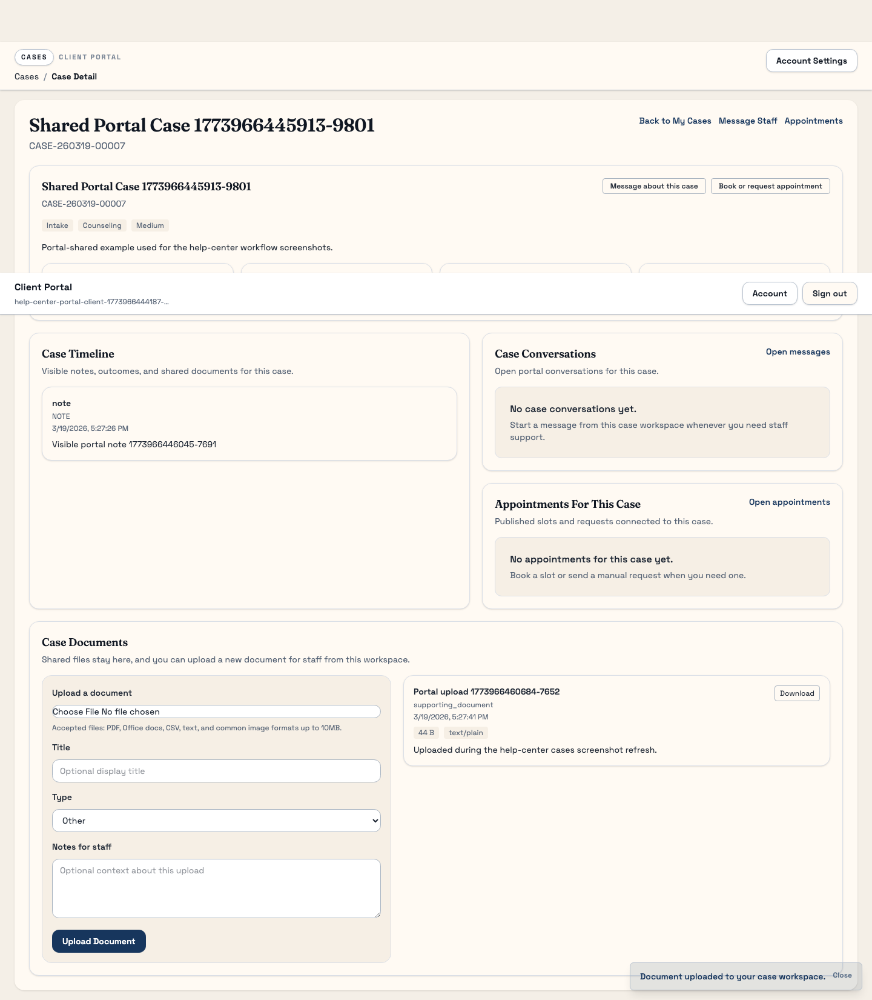

Portal Cases
Open your shared case workspace and keep it up to date
Use this guide when staff has shared a case with you. You will learn how to open the case, read updates, upload documents, message staff, and review appointment options.
What this page is for
Use this guide to work with a case that staff has made visible in the portal. It shows you how to open the shared workspace, read the latest updates, upload files, and send staff the information they asked for.
Before you start
- Sign in to the portal with the email address staff invited or approved.
- Know that you only see cases staff has marked client viewable.
- Keep the case number or title handy in case you need to search for it.
- Have any files ready if staff asked you to upload documents.
Steps
- Open My Cases. Start from the portal dashboard or the Cases link, then find the shared case in the list.
- Read the shared workspace first. Check the case number, status, summary cards, and timeline so you know what staff has already shared.
- Use Message Staff when you need to respond. If you have a question, want to give an update, or need clarification, send a message from the portal instead of waiting for a separate contact method.
- Upload requested documents in Case Documents. Choose the file, give it a useful title, pick the document type, and add a note if staff asked for context.
- Check appointments when staff asks you to book or review one. Open the appointment area to see the current options or the request that belongs to this case.
- Ask staff if the case is missing. If you cannot find a case you expected to see, confirm that the staff team marked it client viewable and shared with the correct contact.


Tip: if you only see one case, that is normal. The portal shows shared cases only, so staff controls what appears here.
What happens next
After you upload a document or send a message, staff can respond inside the same case workspace. The timeline and document list will continue to update as the case moves forward.
Common mistakes
- Looking for a case that staff has not shared to the portal yet.
- Uploading a file type that is not allowed or too large for the portal limit.
- Sending a message without opening the correct case first.
- Expecting appointment options to appear before staff has published them.
Related guides
Need help?
If a case is missing or a file will not upload, note the case number, the email you used to sign in, and the error message you saw. Staff can use that to confirm whether the case is shared correctly or whether the file needs a different format.